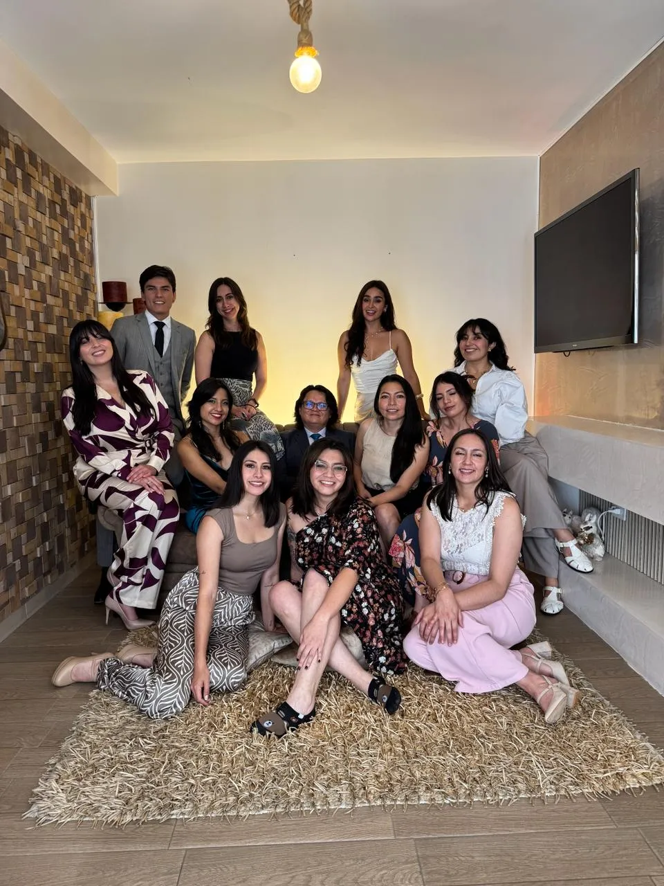
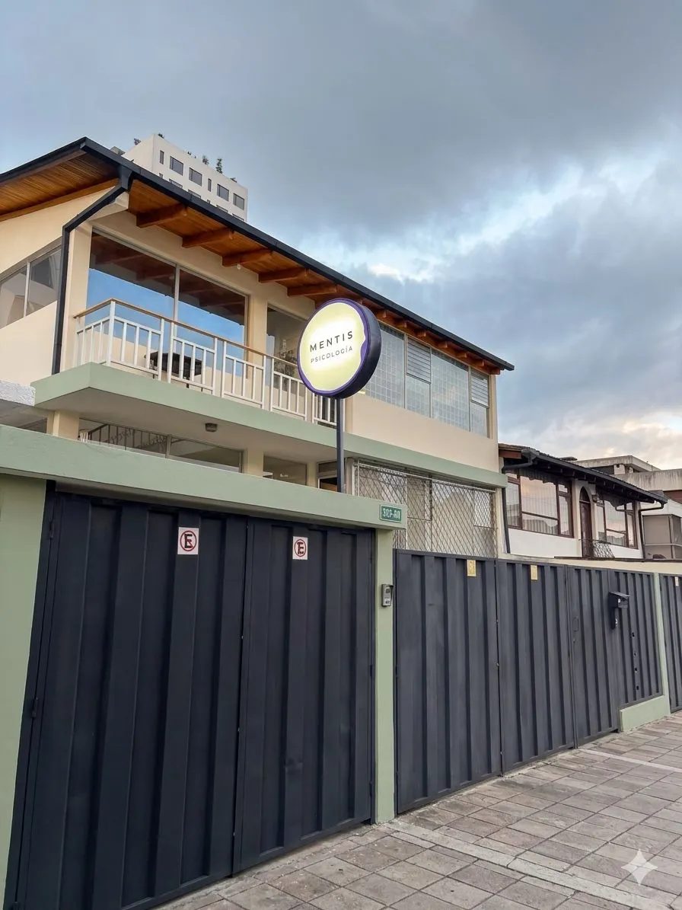
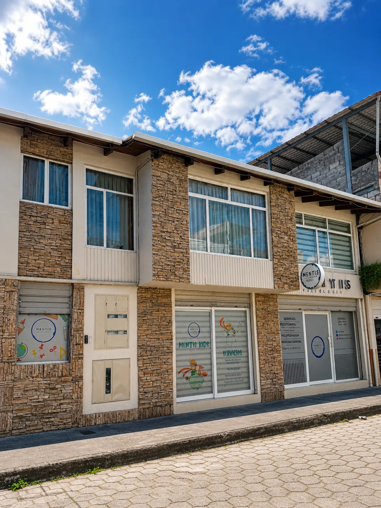

Psicoterapia Cognitivo-Constructivista
Formación en el modelo con el que trabaja Mentis: creencias, significados y experiencias personales.
Ver detallesTerapia psicológica para niños, adolescentes, adultos, parejas y familias. Un espacio seguro, cercano y libre de juicios, desde el enfoque cognitivo constructivista.

Somos una red de psicólogos que cree en una psicología cercana, consciente y respetuosa con cada proceso. Acompañamos procesos reales, sin juicios, con herramientas prácticas y humanas.
Atención para cada etapa de la vida, en Quito, Ibarra o en línea. Cada servicio tiene su página con lo que incluye y preguntas frecuentes.

Ansiedad, estrés, duelos, autoestima y conflictos internos.

Comunicación, conflictos y fortalecimiento del vínculo.

Neurodesarrollo, aprendizaje, conducta y atención temprana.

Dificultades escolares, adaptación e inclusión educativa.

Para decidir qué estudiar o hacia dónde crecer.

Supervisión de casos ética y basada en evidencia.
Por WhatsApp a la sede que prefieras, o cuéntanos que quieres atención en línea.
Te ayudamos a elegir la profesional indicada para tu caso y tu edad.
Una conversación de unos 50 minutos, a tu ritmo, presencial o por videollamada. No necesitas tenerlo todo claro desde el inicio.
Definimos juntos objetivos claros y la frecuencia de las sesiones, y revisamos tu progreso para ajustar el plan cuando haga falta.

Psicólogas, psicólogos y psicopedagogas formados en Ecuador, Argentina y España, que se capacitan constantemente para ofrecerte una psicología ética y actualizada.
Nuestro equipo se formó en
Talleres para todo público y formación para profesionales de la salud mental, en Ecuador y en línea.
Formación en el modelo con el que trabaja Mentis: creencias, significados y experiencias personales.
Ver detallesHerramientas prácticas para reconocer la ansiedad y responder a ella en el día a día.
Ver detallesO en línea, desde donde estés.


Responde 3 preguntas y te recomendamos a la profesional indicada para ti, en Quito, Ibarra o en línea.